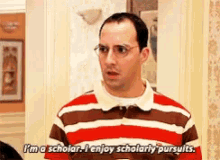

HONORS AND AWARDS

- North Carolina Governors School in Natural Sciences (2019): I studied topics of chemistry,
biology, and neuroscience while specifically researching Acute Lymphocytic Leukemia.
- Science Olympiad (2016-2020): Qualified for states each year and I competed on the varisty
team every year.
- Recieved a grant (2018): Wrote a proposal and received a grant for conducting the IT is for
Girls App Inventor session (2018)
- Swim Team (2008-2018): Swim Tyde & Kernersville Riptyde
- Indian Classical Dance (2008-current): Bharatanatyam
- AP Award (2017 & 2018): AP Scholar of Distinction Award
- National Honor Society (2018-2020): Inducted in 2018, was an active member of the club, was
Chief Marshall in the 2020 induction ceremony.
- Guilford College Dean's List (2018-2020): Recieved strong grades each semester of 11th and
12th grade.
- Junior Marshall for Graduation (2019): Am in the top 10 percent of my class.